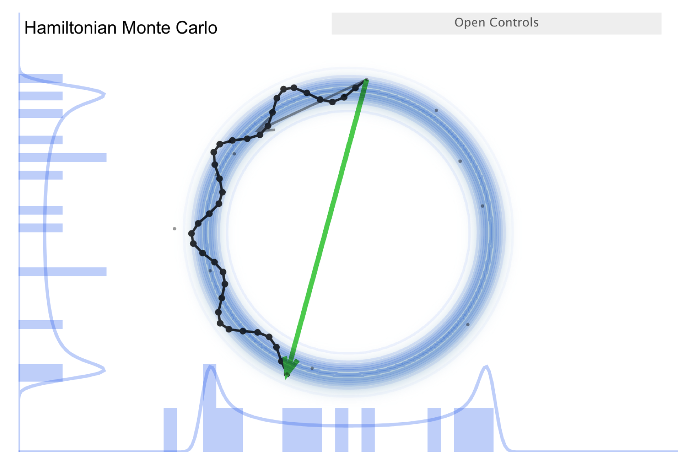
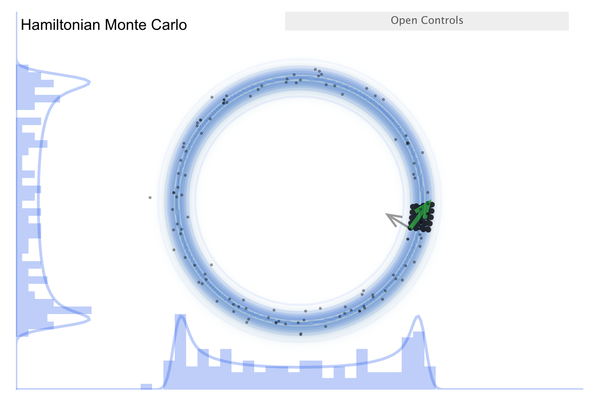
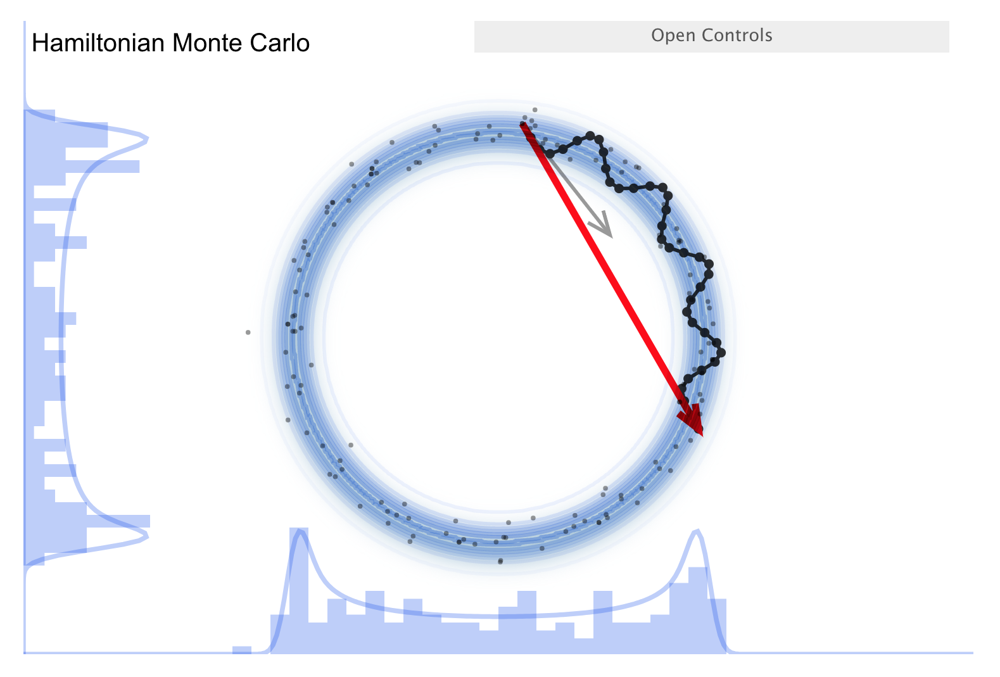
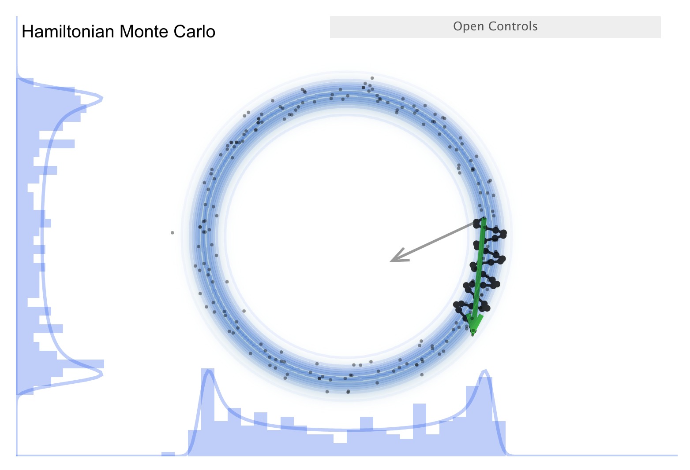

20.1. Introduction to Hamilton Monte Carlo#
“Why walk when you can flow.”
—Richard McElreath
Overview and intuition from simulations#
One of the most widespread techniques in contemporary samplers is Hamiltonian Monte Carlo, or HMC, which is a Metropolis method that uses gradient information to reduce the random-walk behavior and to collect effectively independent samples. It was introduced in lattice QCD by Duane et al. [DKPR87] and was originally named Hybrid Monte Carlo as they were combining molecular dynamics with the Metropolis MCMC algorithm. A very good and detailed review of HMC is written by Radford Neal and is contained in the Handbook of Markov Chain Monte Carlo [BGJM11].
To establish some intuition about HMC, we return to the excellent set of interactive demos by Chi Feng at https://chi-feng.github.io/mcmc-demo/ and their adaptation by Richard McElreath at http://elevanth.org/blog/2017/11/28/build-a-better-markov-chain/.
The McElreath blog piece forcefully advocates abandoning Metropolis-Hasting (MH) sampling in favor of HMC. Let’s summarize the argument. First recall the random walk MH:
Make a random proposal for new parameter values (a step in parameter space, indicated in the visualization by an arrow).
Aceept (green arrow) or reject (red arrow) based on a Metropolis criterion (which is not deterministic but has a random element). This is diffusion (i.e., a random walk), so it is not efficient in exploring the parameter space and needs special tuning to avoid too high a rejection rate. The donut shape in the simulation is common in higher dimensions and it is difficult to explore. (I.e., consider a multidimensional uncorrelated Gaussian distribution. In spherical coordinates the distribution is \(\propto r^n e^{-r^2/2\sigma^2}\), so the marginalized distribution will be peaked away from \(r=0\).)
Now consider the “Better living through Physics” part, which highlights an HMC simulation. The idea is that we map our parameter vector \(\thetavec\) of length \(n\) to a particle in an \(n\)-dimensional space. The surface is an \(n\)-dimensional (inverted) bowl with the shape given by minus-log(target distribution), where the target distribution is the posterior. Now treat the system as frictionless and “flick” the particle in a random direction, so it travels across the bowl.
See the snapshots from the simulation in the figures below. The little gray arrow is the flick. After the particle travels some distance, there is a decision whether to accept; this is done as in MH. Most endpoints are within a high probability region, so a high percentage is accepted. Chains can get far from the starting point easily \(\Lra\) efficient exploration of the full shape. While more calculation along the path is needed, fewer samples are needed; this is typically a winning trade-off. Check the donut example: HMC works very well!
{kind=link}

{kind=link}

{kind=link}

{kind=link}

There is a further improvement called NUTS, which stands for “no-U-turn sampler”. The idea is to address the problem that HMC needs to be told how many steps to take before another random flick. Too few steps and the samples are too similar; too many steps are also too similar. NUTS adaptively finds a good number of steps. In particular, it simulates in both directions to figure out when the path turns around (i.e., U-turns) and stops there. There are other adaptive features; see the Stan documentation or the arXiv article by Michael Betancourt for details. Note that NUTS still has trouble with multimodal targets \(\Lra\) can explore each high probability area, but has trouble going between them.
Implementation details#
The basic idea behind HMC is to translate a PDF for the desired distribution into a potential energy function and to add a (fictitious!) momentum variable. In the Markov chain at each iteration, one resamples the momentum (the flick!), creates a proposal using classical Hamiltonian dynamics, and then does a Metropolis update. Thus, the state space vector \(\pos\) is augmented by a conjugate momentum \(\mom\). Note that \(\pos\) will be the model parameters \(\pars\) (with \(d\) components) in our applications but here we will stick to \(\pos,\mom\) to make the connection with Hamiltonian dynamics explicit.
The \(2 \times d\) dimensional phase space is for a Hamiltonian defined as
where the kinetic energy function \(K(\mom)\) is a design choice (see below) while the potential energy function \(U(\pos)\) will be defined as minus the log probability of the density (PDF) that we wish to sample
where \(\mass\) is a user-defined mass matrix (positive definite and symmetric; typically diagonal as often proportional to the \(d\)-dimensional identity matrix) and where we use \(\p{\pos}\) to denote the PDF that we want to sample. It could for example be a posterior distribution for some model parameters.
We can link \(H(\pos,\mom)\) to a probability distribution for \((\pos,\mom)\) using the canonical Boltzmann distribution
where \(Z\) is the normalization and \(T\) is a temperature (here serving to render the exponents dimensionless). Let us set \(T=1\) and use the expressions (20.2) to obtain the separable joint distribution
Since we will use the Metropolis ratio during sampling, the normalization factor becomes irrelevant. The joint distribution is a produce of two (independent) distributions, the one for \(\mom\) becomes a Gaussian with our design choices and the one for \(\pos\) is the one that we are seeking. If we manage to efficiently sample from \(\p{\pos,\mom}\) then we can just ignore the \(\mom\) samples and we will be left with samples from \(\p{\pos}\).
How do we sample from \(\p{\pos,\mom}\)? Well, naturally we simulate Hamiltonian dynamics for a finite period of time. For Metropolis updates, using a proposal found by Hamiltonian dynamics, the acceptance probability will be one since \(H\) is kept invariant. Unfortunately, we will only be able to solve Hamilton’s equations approximately and in practice we might not end up with perfect energy conservation.
Apart from energy conservation, two additional key properties of Hamiltonian dynamics—in the context of using it for MCMC sampling—are that it is time reversibile and that it preserves the volume in \((\pos,\mom)\)-space, a result known as Liouville’s theorem. (If we take a cluster of points and follow their time evolution, the volume they occupy is unchanged; see Liouville theorem visualization.) This is critical because a change in volume would mean we would have to make a nontrivial adjustment to the proposal because the normalization \(Z\) would change.
Hamilton’s equations are
Every HMC iteration begins with a sample of the momentum \(\mom\) and continues with the integration of Hamilton’s equations for some total time \(t\) before the final Metropolis update and the (likely) acceptance of the new position.
In order to maintain energy conservation it is important to simulate the Hamiltonian dynamics using a short time step and to perform the integration such that the accumulation of numerical errors is avoided. The standard method in HMC is known as leapfrog integration and is a symplectic integrator where the discretization error for each time step is equally likely to be positive and negative, thus helping to preserve the total energy throughout the simulation. Leapfrog integration works as an update of the momentum with half a time step, followed by a full step for the position (using the new values for the momentum variables), and finally another half time step for the momentum using the newly updated position variables.
Leapfrog algorithm
The requirements for HMC are satisfied by the exact Hamilton’s equations, but we are approximating the solution to these differential equations. This necessitates a symplectic (symmetry conserving) integration.
Ordinary Runge-Kutta-type ODE solvers won’t work because they are not time-reversal invariant. E.g., consider the Euler method. Forward and backward integrations are different because the derivatives are calculated from different points. We need something like the Leapfrog algorithm (here is the 2nd order version):
See Solving orbital equations with different algorithms for a comparison of Leapfrog to other algorithms. Also see Figures 1, and 3-6 in “MCMC using Hamiltonian dynamics” by Radford Neal for further illustrations.
Algorithm 20.1 (The Hamiltonian Monte Carlo method)
HMC can be used to sample from continuous distributions pn \(\mathbb{R}^d\) for which both the density and the partial derivatives of the log of the density can be evaluated.
In the first step, new values for the momentum variables \(\mom\) are randomly drawn from their Gaussian distribution (independently of the current values of the position variables). The result is a state \((\pos_i,\mom_i)\). If \(M\) is diagonal, \(\mom_i\) will have mean zero and variance \(\mass_{ii}\). \(\pos_i\) is changed and \(\mom_i\) is from the correct conditional distribution given \(\pos\), so the canonical joint distribution is invariant.
In the second step, a Metropolis update is performed, simulating Hamiltonian dynamics to propose a new state.
Starting at the current state \((\pos_i,\mom_i)\), Hamilton’s equations are integrated for \(L\) timesteps of length \(\varepsilon\) using the leapfrog method (or some other reversible method that preserves volume).
The momentum variable at the end of this \(L\)-step trajectory are then negated, giving a proposed state \((\pos^*_i,\mom^*_i)\). The negation is is needed to make the Metropolis proposal symmetric, but does not matter in practice since \(K(-\mom) = K(\mom)\) and the momentum will be replaced before it is used again.
The proposed state is accepted as the new state \((\pos_{i+1},\mom_{i+1})\) with probability
\[ \min\left( 1, -\exp(-H(\pos^*_i,\mom^*_i)) +H\exp(-H(\pos_i,\mom_i)) \right). \]Otherwise, the new state is a copy of the current state. Note that the probability distribution for \((\pos,\mom)\) jointly is (almost) unchanged because energy is conserved, but in terms of \(\pos\) we get a very different probability density.
For successful application of HMC there are three hyperparameters that need to be tuned by the user:
The mass matrix \(\mass\);
The integration timestep \(\varepsilon\);
The number of timesteps \(L\).
The MontePython implementation of HMC, by Isak Svensson, was published in Ref. [SEkstromForssen22] and is publicly available at: svisak/montepython.git
More advanced versions, such as the No-U-Turn Samplers (NUTS) [HG+14], are also available and aims to simplify the process of tuning the hyperparameters.